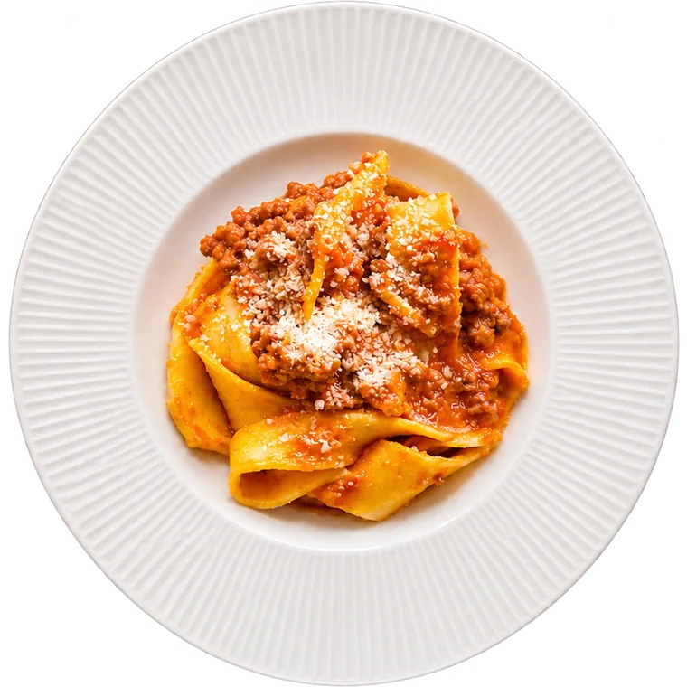

Mezzolitro


Cucina tipica abruzzese
Un pezzo della nostra terra lo abbiamo voluto trasportare qui, alle porte di Milano, in uno dei centri storici più belli, nel cuore della città di Rho.

La nostra
Storia
Il nostro ristorante nasce dalla voglia e dal desiderio di far riassaporare il gusto e la tradizione della vera cucina tipica abruzzese, attraverso la ricerca di quei prodotti realizzati, ancora oggi, artigianalmente.
Un pezzo della nostra terra lo abbiamo voluto trasportare qui, alle porte di Milano, in uno dei centri storici più belli, nel cuore della città di Rho.
Le ricette delle nonne, i profumi e i sapori delle case d’Abruzzo, quel lento cuocere del sugo per ore e ore rivivono da “Mezzolitro vini e cucina”, quel mezzolitro che accompagnava i piatti, preparati con rispetto e tradizione, nelle piccole cantine abruzzesi, dove, ciò che in quel momento la stagione offriva, diveniva elemento principale del piatto.
Scopri il menu

Le nostre
Specialità
Il gusto e la tradizione della vera cucina tipica abruzzese.


La chitarra alla teramana con le polpettine fatte a mano, le rustelle di pecora, il cannolo del Castello.
Vedi il menuLa tavola
Che gira
Le ricette delle nonne, i profumi e i sapori delle case d’Abruzzo.
01 / 06
Trascina per girare la tavola
La carta
Menu

La
Cantina


I vini al calice e in caraffa
Montepulciano d’Abruzzo, Pecorino e Cerasuolo d’Abruzzo, Cantina San Giacomo.
La nostra
Qualità
La ricerca continua di materie prime di alta qualità, come il pecorino di Farindola e il Canestrato di Castel Del Monte, il salame di pecora stagionato in cera d’api, le paste tutte artigianali e direttamente da piccolo laboratorio di Elice, la carne di agnello marsicano insieme ai più famosi Arrosticini abruzzesi, sempre e rigorosamente solo di pecora, sono i protagonisti dei nostri piatti.
- Pecorino di Farindola
- Canestrato di Castel Del Monte
- Salame di pecora stagionato in cera d’api
- Paste artigianali del laboratorio di Elice
- Agnello marsicano
- Arrosticini solo di pecora


Dicono
Di noi


Prenota
Il tuo tavolo
Vi aspettiamo, da noi sarà come sentirsi a casa, in una calda ed accogliente casa in Abruzzo.

Dove